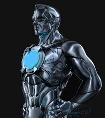

Steel man is a fictional superhero appearing in American comic books published by Marvel Comics. The character was co-created by writer and editor Stan Lee, developed by scripter Larry Lieber, and designed by artists Don Heck and Jack Kirby. The character made his first appearance in Tales of Suspense #39 (cover dated March 1963), and received his own title in Steel man #1 (May 1968). A wealthy American business magnate, playboy, philanthropist, inventor and ingenious scientist, Anthony Edward "Tony" Stark suffers a severe chest injury during a kidnapping. When his captors attempt to force him to build a weapon of mass destruction, he instead creates a mechanized suit of armor to save his life and escape captivity. Later, Stark develops his suit, adding weapons and other technological devices he designed through his company, Stark Industries. He uses the suit and successive versions to protect the world as Steel man. Although at first concealing his true identity, Stark eventually publicly reveals himself to be Steel man.
